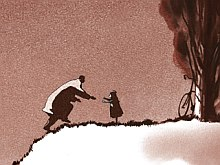
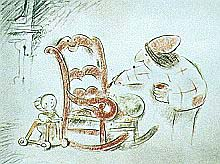
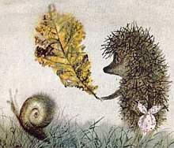
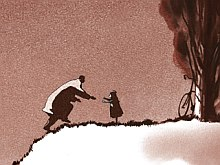
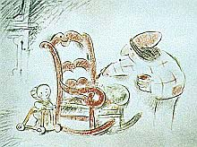
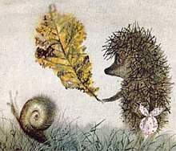

En «L’enracinement» (El arraigo / Echar raíces / Raíces del existir ) Simone Weil intenta hacer una enumeración de las necesidades del alma. Necesidades universales y esenciales, se entiende. Una sociedad será justa en la medida en que brinde a sus miembros la satisfacción de estas necesidades (además de las corporales, claro está).
La mayoría de estas necesidades vienen de a pares, como opuestos o complementarios.
En primer lugar, pone Simone al orden («es la primera de las necesidades, incluso está por encima de las necesidades propiamente dichas»). Sería interesante detenernos en esto, pero por ahora me parece mejor pasar a la segunda necesidad: la libertad. Y por ahora sólo la cito, a ver si con esto me obligo a seguir el tema…
… Seguir leyendo
Archivo por meses: mayo 2006
Más videos
Advertencia: puse links de emule sólo para aquellos que saben qué es eso, y lo tienen instalado. Para los que no saben: es uno de esos programas para intercambiar archivos por Internet. No recomiendo su uso a
cualquiera: entre sus posibles bemoles se cuentan aspectos éticos/legales (se usan sobre todo para «piratear» programas y archivos) y riesgos «sanitarios» (virus y pornografía al por mayor). Además, sólo son prácticos si se tiene conexión con banda ancha o enlace permanente
a Internet.
Si seguimos buscando muestras de estudio Ghibli, pero pisando terrenos menos riesgosos (aunque, también, sólo para conexión rápida), podemos buscar videos personales en youtube.com.
Por ejemplo: Totoro en MTV: video clip, con el tema musical de cierre y una buena selección de escenas de la película (4 min). O Trailer de Totoro, del DVD (2 min); o un trailer de Mononoke, o un video clip casero con escenas de Miyazaki ; y otro, este con música de Loreena McKennit.
Laputa: títulos iniciales. Kiki , primeros 10 minutos.
Y algunas rarezas: musica de Chihiro, tema principal en piano y voz -creo que con el mismísimo Joe Hisaishi; uno tocando el tema de Laputa en piano (vía SGW); Jarinko Chie, tìtulos finales de película vieja, casi inconseguible, de Takahata.
Si seguimos buscando muestras de estudio Ghibli, pero pisando terrenos menos riesgosos (aunque, también, sólo para conexión rápida), podemos buscar videos personales en youtube.com.
Por ejemplo: Totoro en MTV: video clip, con el tema musical de cierre y una buena selección de escenas de la película (4 min). O Trailer de Totoro, del DVD (2 min); o un trailer de Mononoke, o un video clip casero con escenas de Miyazaki ; y otro, este con música de Loreena McKennit.
Laputa: títulos iniciales. Kiki , primeros 10 minutos.
Y algunas rarezas: musica de Chihiro, tema principal en piano y voz -creo que con el mismísimo Joe Hisaishi; uno tocando el tema de Laputa en piano (vía SGW); Jarinko Chie, tìtulos finales de película vieja, casi inconseguible, de Takahata.
Bloy y Grasset
Resulta que
Leon Bloy incluyó en el tercer volumen de sus diarios («Cuatro años de cautiverio en Cochons-sur-Marne») una serie de poemas en prosa -o algo así- que escribió sobre cada mes del año, sobre dibujos de Eugenio Grasset para
un almanaque («zodiacal» lo llama él, no sé muy bien por qué).
Este Grasset fue al parecer uno de los pioneros del «Art noveau«.
En el diario, Bloy anota la conveniencia de leer los poemas teniendo los dibujos adelante… cosa difícil, en su tiempo y en el nuestro; de hecho, él nunca logró una impresión conjunta.
Y yo hace años vengo buscando esas ilustraciones -en Internet y en librerías-, sin fortuna. No porque los «poemas» de Bloy me parezcan algo fabuloso, sino porque… qué se yo; porque soy un aparato, pónganle…
Ahora bien… esta semana, rebuscando material de Bloy -ya les contaré- se me ocurrió intentar de nuevo. Y los encontré, y me gustaron, y me gustó releer lo de Bloy con los dibujos al lado, y me puse contento como un idiota.
Y entonces -ya que la hacemos, la hacemos bien- escaneé los textos (bien opulentos y algo delirantes, como es su estilo), corregí lo que pude (con original en francés delante! – gracias, Laura) y armé esta página con las respectivas imágenes, para que todos los interesados puedan disfrutarlo.
Todos, absolutamente todos los interesados del mundo; es decir -probablemente- solamente yo.
Pero bueno, los gustos hay que dárselos en vida, dicen.
PS: sí, no fui claro. No dudo de la existencia de lectores de Bloy, incluso potenciales. Lo que me parece improbable es que algún otro que no sea yo vaya a leer -a conciencia- el texto que trascribí.
Este Grasset fue al parecer uno de los pioneros del «Art noveau«.
En el diario, Bloy anota la conveniencia de leer los poemas teniendo los dibujos adelante… cosa difícil, en su tiempo y en el nuestro; de hecho, él nunca logró una impresión conjunta.
Y yo hace años vengo buscando esas ilustraciones -en Internet y en librerías-, sin fortuna. No porque los «poemas» de Bloy me parezcan algo fabuloso, sino porque… qué se yo; porque soy un aparato, pónganle…
Ahora bien… esta semana, rebuscando material de Bloy -ya les contaré- se me ocurrió intentar de nuevo. Y los encontré, y me gustaron, y me gustó releer lo de Bloy con los dibujos al lado, y me puse contento como un idiota.
Y entonces -ya que la hacemos, la hacemos bien- escaneé los textos (bien opulentos y algo delirantes, como es su estilo), corregí lo que pude (con original en francés delante! – gracias, Laura) y armé esta página con las respectivas imágenes, para que todos los interesados puedan disfrutarlo.
Todos, absolutamente todos los interesados del mundo; es decir -probablemente- solamente yo.
Pero bueno, los gustos hay que dárselos en vida, dicen.
PS: sí, no fui claro. No dudo de la existencia de lectores de Bloy, incluso potenciales. Lo que me parece improbable es que algún otro que no sea yo vaya a leer -a conciencia- el texto que trascribí.
Bloy, Bernanos y los imbéciles
Estoy buscando material sobre Bloy, y sobre Bernanos (con quien tiene algunas cosas en común); y encontré esto que cuenta un mexicano en un reportaje:
– Cuenta Victoria Ocampo, la argentina, que invitó a Bernanos a su gigantesca finca en Buenos Aires. Ahí estaban los dos hijos de Bernanos y por allá lejos venía entrando no sé quién, un par de hombres importantes en la literatura, y los niños gritaron: «¡Papá, ahí vienen dos imbéciles!» Esto lo habían escuchado de Bernanos no sé cuántas veces…
… Seguir leyendo Dos de Ghibli
En Buta connection, estupendo sitio dedicado a estudio Ghibli, hay algunos videos para bajarse; trailers y extractos de películas. De interés para los que no saben
de qué se trata, esto de Miyazaki y Takahata -y quieren enterarse… y tienen banda ancha, o paciencia.
Por ejemplo, pueden bajarse este trailer de «Totoro» (2 minutos; 8.5 MB), quizás mi preferida de Miyazaki (y no es poco decir).
O este fragmento de «Ayer nomás» (Omohide Poro Poro – Taeko rememora su primer amor; 3 min ; 19 MB), uno de los mejores momentos de Takahata.
Por ejemplo, pueden bajarse este trailer de «Totoro» (2 minutos; 8.5 MB), quizás mi preferida de Miyazaki (y no es poco decir).
O este fragmento de «Ayer nomás» (Omohide Poro Poro – Taeko rememora su primer amor; 3 min ; 19 MB), uno de los mejores momentos de Takahata.
Cortos
Estuve – estoy- rebuscando y mirando cortos animados, de variado pelaje.
Anoto tres que me gustaron especialmente:

1: Padre e hija (Father and Daughter), de Michael Dudok de Wit.
8 minutos, muda, dibujada a lápiz, fondos sepia. Una niña que despide a su padre, y pasa la vida añorándolo, visitando en bicicleta el punto de la costa donde él se embarcó. Muy poética, si me toleran el adjetivo.
Acá hay un link con un clip (Quick Time) de unos segundos. Completa, vía emule.
 2: Crac!, de Frederic Back, canadiense, el autor de «El hombre que plantaba árboles», ya recomendado aquí. En 15 minutos, la historia de una familia -y de yapa, de una civilización- vista desde los ojos de una silla mecedora. También muda ; y como la otra, la música de fondo (folk, en este caso, clásica en la otra) es fundamental. Cierra perfecto, con la mezcla justa de alegría y melancolía (o bien optimismo y pesimismo (si prefieren tales palabras (espero que no (estoy abusando de los paréntesis ultimamente, no?)))). Se consigue en algún DVD (disponible en la Videoteca nombrada), o por emule.

3: Puercoespín en la niebla, (o «Erizo»); Hedgehog in the Fog de Yuri Norstein, famoso animador ruso.
La técnica, como de stop-motion artesanal, bidimensional y expresionista -estética infantil y sofisticada al mismo tiempo- no es de las que más me llegan; pero está muy bien; elegante, graciosa y tierna. Poco más de diez minutos, hablada -por relator.
En emule, acá.
Se reciben otras recomendaciones.
Anoto tres que me gustaron especialmente:

1: Padre e hija (Father and Daughter), de Michael Dudok de Wit.
8 minutos, muda, dibujada a lápiz, fondos sepia. Una niña que despide a su padre, y pasa la vida añorándolo, visitando en bicicleta el punto de la costa donde él se embarcó. Muy poética, si me toleran el adjetivo.
Acá hay un link con un clip (Quick Time) de unos segundos. Completa, vía emule.
 2: Crac!, de Frederic Back, canadiense, el autor de «El hombre que plantaba árboles», ya recomendado aquí. En 15 minutos, la historia de una familia -y de yapa, de una civilización- vista desde los ojos de una silla mecedora. También muda ; y como la otra, la música de fondo (folk, en este caso, clásica en la otra) es fundamental. Cierra perfecto, con la mezcla justa de alegría y melancolía (o bien optimismo y pesimismo (si prefieren tales palabras (espero que no (estoy abusando de los paréntesis ultimamente, no?)))). Se consigue en algún DVD (disponible en la Videoteca nombrada), o por emule.

3: Puercoespín en la niebla, (o «Erizo»); Hedgehog in the Fog de Yuri Norstein, famoso animador ruso.
La técnica, como de stop-motion artesanal, bidimensional y expresionista -estética infantil y sofisticada al mismo tiempo- no es de las que más me llegan; pero está muy bien; elegante, graciosa y tierna. Poco más de diez minutos, hablada -por relator.
En emule, acá.
Se reciben otras recomendaciones.
Orden mínimo
Lo leí anteayer en el colectivo, de ojito, en los apuntes de una chica que venía estudiando
al lado mío.
Derecho, cuarto año. El primer párrafo asentaba,
si la memoria me es fiel, esta proposición:
Pecando en el cual estamos cayendo ahorita mismo, claro está…
Una sociedad debe procurar el máximo de libertad
y el mínimo de orden necesario para convivir.
Sentir que esto es una burrada, dolerse
de que libros de textos y docentes alimenten
a los chicos con cosas como esta,
y no hacer el esfuerzo de meditarlo y discernir por qué
y en qué plano es una burrada, para explicarlo a los otros y a uno mismo… vendría a ser un ejemplo
más de esa especie de pecado que decíamos el otro día.Pecando en el cual estamos cayendo ahorita mismo, claro está…
La presencia del resucitado
Otra de Bruckberger:
Tu comportamiento durante los cuarenta días que siguieron a
tu resurrección muestra bien el estilo que pueden adoptar
tus milagros para fortificar a tus fieles oprimidos. Una
discreción indefinida que parece indiferencia, hasta
ausencia, luego una brusquedad y de pronto una presencia que
aporta con ella su propia evidencia, inaccesible para
aquellos que no te aman por
sobre todas las cosas.
Corresponde a cada uno de nosotros rehacer tu peregrinaje terrestre, toca a cada uno de nosotros estar fatigado del camino como tú lo estuviste, de sudar la sangre de la angustia, de cargar el fardo y de morir solo, fuera de las murallas, manteniendo el puño cerrado sobre tu promesa que está más allá del tiempo.
Eres tú quien dijo:
«No os dejaré huérfanos: volveré a vosotros.
«Dentro de poco el mundo ya no me verá, pero vosotros me veréis, porque yo vivo y también vosotros viviréis.
Corresponde a cada uno de nosotros rehacer tu peregrinaje terrestre, toca a cada uno de nosotros estar fatigado del camino como tú lo estuviste, de sudar la sangre de la angustia, de cargar el fardo y de morir solo, fuera de las murallas, manteniendo el puño cerrado sobre tu promesa que está más allá del tiempo.
Eres tú quien dijo:
«No os dejaré huérfanos: volveré a vosotros.
«Dentro de poco el mundo ya no me verá, pero vosotros me veréis, porque yo vivo y también vosotros viviréis.
Advenedizos
A propósito. Una de Bruckberger:
…Ya ha pasado el tiempo en que la ciencia tenía las manos
puras. ¿Quién se atrevería hoy a sostener que ese famoso
«Imperio de la naturaleza» -Imperium Naturae-, que los
hombres de ciencia buscan tan ávidamente desde el
Renacimiento no es susceptible de convertirse en el flagelo
de la naturaleza, -una especie de Atila fabuloso que
galopará por todo el planeta y detrás de quien ya no volverá
a crecer la hierba?
Los apologistas modernos, tus propagandistas que no valen más que los otros -y tu propaganda te traiciona tanto como la casuística traiciona al Evangelio- han reducido mucho tu papel de Liberador. Ciertamente la dignidad más profunda del hombre es la libertad de elegir entre el bien y el mal, entre un bien particular y un bien mejor. Es una libertad íntima, que subsiste incluso en un prisionero, incluso en un condenado a muerte, y que tú has venido a reforzar con tu gracia.. Pero tú no sólo restauras la libertad del hombre, debes devolver también a la naturaleza su propia dignidad.
¿Dónde está la dignidad de la naturaleza? Está en haber salido de las manos de Dios y de llevar todavía los vestigios de ese prodigioso origen. No hay ni violación ni sacrilegio en querer conocer la naturaleza, en querer penetrar sus secretos, sus leyes, en pretender utilizarlas para el bienestar del hombre, ni aun en querer dominar la naturaleza: Ese derecho del hombre’ a dominar la naturaleza está inscripto en el libro del Génesis, en el documento mismo de la creación del universo.
Pero el hombre sólo es amo de la naturaleza cuando obedece y se subordina a nuestro Amo y Creador común. Para descubrir sin violencia los secretos de la naturaleza, es necesario entrar en su intimidad; para entrar en su intimidad es necesario merecerlo, y no hay verdadera ciencia sin humildad. Diría incluso que es necesario amar a la naturaleza, y aun más, que hay que hacerse amar por ella. ¿Pero cómo la naturaleza podría amarnos contra Dios, cuando se piensa en el amor y el humor con que El la ha creado?
Hay adulterio en la ciencia moderna, que se edificó voluntariamente en la negación de las fidelidades más fundamentales, las de los orígenes. Esta perversión fundamental es la causa de lo que comienza a sospecharse: la ciencia moderna, por lo demás tan prodigiosa, puede también convertirse en un vandalismo de la naturaleza. Hoy la barbarie es politécnica. Por medio de la ciencia el hombre ha echado a Dios de la naturaleza. Hay una de tus famosas parábolas sobre esos servidores infieles que matan al, heredero para apropiarse del dominio. La parábola termina mal para ellos. Eres tú quien concluyes hablando del Amo de la viña: «A esos miserables les dará una muerte miserable y arrendará la viña a otros labradores que le paguen los frutos a su tiempo.» Ciertamente, ¿se puede pensaren una muerte peor que la de un Apocalipsis científico del que hemos tenido algunos anticipos?
Al haberlo echado de la naturaleza, el hombre ha puesto a Dios ante este dilema: o bien quedarse en la puerta, dejar indefinidamente que el hombre sabotee a gusto lo que es una obra divina, dejarlo jugar con ella, dejarlo violentarla a su antojo y placer, o bien que Dios regrese, drástico, para volver a poner al, hombre en su lugar y restaurar de ese modo la maravillosa inocencia de la naturaleza.
Querría que la ciencia hiciera del hombre un dios, ¿el hombre se sentiría mejor dentro de ese, pellejo? ¿Qué Dios angustiado y endeble sería ese que al final moriría lo mismo sin entregar su espíritu a quienquiera que sea, pues lo que estaría muerto en él, mucho antes que él mismo, es precisamente su espíritu? Por cierto, el hombre no está cómodo en su papel de amo, tiene modales de usurpador y de advenedizo. Mira siempre hacia el lado de la puerta de tanto que teme ver regresar al verdadero Amo.
«El diablo es el imitador de Dios.» El hombre disfrazado de tirano de la naturaleza hace también de imitador de Dios.
De un imitador a otro, a lo largo de algunos millares de generaciones, ¿será ése el único destino de la humanidad?
Los apologistas modernos, tus propagandistas que no valen más que los otros -y tu propaganda te traiciona tanto como la casuística traiciona al Evangelio- han reducido mucho tu papel de Liberador. Ciertamente la dignidad más profunda del hombre es la libertad de elegir entre el bien y el mal, entre un bien particular y un bien mejor. Es una libertad íntima, que subsiste incluso en un prisionero, incluso en un condenado a muerte, y que tú has venido a reforzar con tu gracia.. Pero tú no sólo restauras la libertad del hombre, debes devolver también a la naturaleza su propia dignidad.
¿Dónde está la dignidad de la naturaleza? Está en haber salido de las manos de Dios y de llevar todavía los vestigios de ese prodigioso origen. No hay ni violación ni sacrilegio en querer conocer la naturaleza, en querer penetrar sus secretos, sus leyes, en pretender utilizarlas para el bienestar del hombre, ni aun en querer dominar la naturaleza: Ese derecho del hombre’ a dominar la naturaleza está inscripto en el libro del Génesis, en el documento mismo de la creación del universo.
Pero el hombre sólo es amo de la naturaleza cuando obedece y se subordina a nuestro Amo y Creador común. Para descubrir sin violencia los secretos de la naturaleza, es necesario entrar en su intimidad; para entrar en su intimidad es necesario merecerlo, y no hay verdadera ciencia sin humildad. Diría incluso que es necesario amar a la naturaleza, y aun más, que hay que hacerse amar por ella. ¿Pero cómo la naturaleza podría amarnos contra Dios, cuando se piensa en el amor y el humor con que El la ha creado?
Hay adulterio en la ciencia moderna, que se edificó voluntariamente en la negación de las fidelidades más fundamentales, las de los orígenes. Esta perversión fundamental es la causa de lo que comienza a sospecharse: la ciencia moderna, por lo demás tan prodigiosa, puede también convertirse en un vandalismo de la naturaleza. Hoy la barbarie es politécnica. Por medio de la ciencia el hombre ha echado a Dios de la naturaleza. Hay una de tus famosas parábolas sobre esos servidores infieles que matan al, heredero para apropiarse del dominio. La parábola termina mal para ellos. Eres tú quien concluyes hablando del Amo de la viña: «A esos miserables les dará una muerte miserable y arrendará la viña a otros labradores que le paguen los frutos a su tiempo.» Ciertamente, ¿se puede pensaren una muerte peor que la de un Apocalipsis científico del que hemos tenido algunos anticipos?
Al haberlo echado de la naturaleza, el hombre ha puesto a Dios ante este dilema: o bien quedarse en la puerta, dejar indefinidamente que el hombre sabotee a gusto lo que es una obra divina, dejarlo jugar con ella, dejarlo violentarla a su antojo y placer, o bien que Dios regrese, drástico, para volver a poner al, hombre en su lugar y restaurar de ese modo la maravillosa inocencia de la naturaleza.
Querría que la ciencia hiciera del hombre un dios, ¿el hombre se sentiría mejor dentro de ese, pellejo? ¿Qué Dios angustiado y endeble sería ese que al final moriría lo mismo sin entregar su espíritu a quienquiera que sea, pues lo que estaría muerto en él, mucho antes que él mismo, es precisamente su espíritu? Por cierto, el hombre no está cómodo en su papel de amo, tiene modales de usurpador y de advenedizo. Mira siempre hacia el lado de la puerta de tanto que teme ver regresar al verdadero Amo.
«El diablo es el imitador de Dios.» El hombre disfrazado de tirano de la naturaleza hace también de imitador de Dios.
De un imitador a otro, a lo largo de algunos millares de generaciones, ¿será ése el único destino de la humanidad?
Lo que se ve y lo que se explica
Es disgustante, es deprimente, asistir
a la sumisión idolátrica del público ante
los llamados «progresos de la ciencia»,
sí.
Pero, a mí me deprime casi tanto la pobreza de las voces contrarias -de la Iglesia o no. En esto, y en tantas cosas, pocos parecen reconocer que no es suficiente ver el mal, delerse de él, y manifestar esa videncia y ese dolor, sino que es necesario hacer el esfuerzo de meditar eso, para entonces formularlo de una manera penetrante, inteligible e inteligente.
Y que esta necesidad es real, y no sólo de cara al público ignorante, si no ante nosotros mismos: necesitamos explicar bien, no sólo para hacernos entender, sino también -y sobre todo- para entender nosotros. Se me hace que, si no sabemos forjar un alegato de ese tipo, es de temer que estamos fallando -que estamos pecando– tanto como los otros, y que nuestra videncia es en gran medida una ilusión.
Pero, a mí me deprime casi tanto la pobreza de las voces contrarias -de la Iglesia o no. En esto, y en tantas cosas, pocos parecen reconocer que no es suficiente ver el mal, delerse de él, y manifestar esa videncia y ese dolor, sino que es necesario hacer el esfuerzo de meditar eso, para entonces formularlo de una manera penetrante, inteligible e inteligente.
Y que esta necesidad es real, y no sólo de cara al público ignorante, si no ante nosotros mismos: necesitamos explicar bien, no sólo para hacernos entender, sino también -y sobre todo- para entender nosotros. Se me hace que, si no sabemos forjar un alegato de ese tipo, es de temer que estamos fallando -que estamos pecando– tanto como los otros, y que nuestra videncia es en gran medida una ilusión.
Poniendo orden
Anduve trabajando -más de lo previsto-
en el sitio, poniendo orden en el material,
unificando estilos, modernizando htmls,
y centralizando los recursos… de ahora en más
(espero!) me será más fácil agregar material
de manera controlada.
Pasen y vean, si gustan. No encontrarán material nuevo, pero todo debería estar más a mano ahora; aunque me falta incorporar el material que metí en posts del blog, y otras cositas. Si encuentran errores o inconsistencias, o si tienen sugerencias, avisen.
Pasen y vean, si gustan. No encontrarán material nuevo, pero todo debería estar más a mano ahora; aunque me falta incorporar el material que metí en posts del blog, y otras cositas. Si encuentran errores o inconsistencias, o si tienen sugerencias, avisen.
Otros tradicionalismos – 3
Algunas observaciones y perplejidades adicionales:
Sabemos que la mayoría de los antiguos (griegos, por ejemplo;
Aristóteles, por ejemplo) creían en la eternidad
del mundo. Pero yo siempre había pensando esa teoría
en términos «cosmológicos», no en términos humanos.
Necesité esa referencia de Gilson a la tradición según
Aristóteles para hacerme una idea: así, un tradicionalista
que cree en la eternidad del mundo, cree en una trasmisión
que se remonta al pasado infinitamente. Porque no sólo
el mundo es eterno: también lo es el hombre.
Me impresionó tomar conciencia de eso. Tan acostumbrados estamos a la cosmovisión lineal (y la evolución; y el progreso científico) que nos resulta difícil concebirlo: una humanidad eterna, siempre igual, culturas que pasan una atrás de la otra… traten de imaginarlo; da vértigo.
¿Las últimas lineas de Gilson no vendrían a contradecir lo anterior? Si hace falta alguna noción previa de Dios para aprehender
las demostraciones de su existencia, ¿cómo puede decir que
«carece de importancia que la educación familiar o la enseñanza de las escuelas o de las iglesias transmita esta noción a los espíritus»?
Sospecho que estamos
demasiado prontos a asentir a la primera hipótesis
y a rechzar la segunda:
Me impresionó tomar conciencia de eso. Tan acostumbrados estamos a la cosmovisión lineal (y la evolución; y el progreso científico) que nos resulta difícil concebirlo: una humanidad eterna, siempre igual, culturas que pasan una atrás de la otra… traten de imaginarlo; da vértigo.
…doble hipótesis: en primer lugar, que la certeza de la existencia de Dios es en gran medida independiente de las demostraciones filosóficas que de ella se dan; en segundo lugar, que el fracaso de tales pruebas para convencer a espíritus modernos no tiene que ver gran cosa con la difusión de la ciencia.
… «demasiado» prontos, digo, porque sospecho que no entendemos bien ninguna de las dos.
Otros tradicionalismos – 2
Sí, el post quedó un poco críptico…
pero tampoco Gilson es del todo claro, al menos
para mí. Se trata de situar con justeza el
papel que juega la «tradición» (y la entrecomillo
porque la palabra tiene diversos sentidos)
en nuestro conocimiento de Dios, y su relación
con las demostraciones (metafísicas, claro;
¿qué si no?) de la existencia de Dios,
y con el ateísmo actual.
En todo caso, aclaro que no pretendía ser un dardo para nadie («Escuchen , escuchen»), ni un alegato contra nada. Tema para pensar un poco, nomás.
… Seguir leyendo
En todo caso, aclaro que no pretendía ser un dardo para nadie («Escuchen , escuchen»), ni un alegato contra nada. Tema para pensar un poco, nomás.
… Seguir leyendo
Privación
— ¿Qué es lo que estás tratando de decirme, Grommit?
Si no me equivoco, esta (la película) es la primera vez
que Wallace
hace semejante pregunta. Es la primera vez que uno siente que
al perro -en efecto- le falta hablar.
Por primera vez, su carencia de voz -y de boca-
se percibe como una privación.
Falta de naturalidad, lamentable disonancia, a mi ver, signo de que los guionistas han perdido el tren. (Hay otros signos: las referencias a King-Kong, todas esos recursos fáciles a la Shrek…. ). Lástima.«Las luces malas del centro / te hicieron meter la pata«, diríamos, con voz de Edmundo Rivero.
Gozo y miseria
De los diarios de Leon Bloy:
¿ Qué debo pensar de mí mismo?
Se me ocurrió esto para consolarme de la continua mediocridad de mis esfuerzos hacia una vida santa : no se hace lo que se debería hacer, se hace lo que se puede, es decir, lo que Dios nos manda hacer. Tiene que ser así, pues de lo contrario seríamos tanto como dioses, y no nos quedaría sino crear mundos.
Y si no sintiera mi miseria, ¿cómo haría para sentir mi gozo, hijo primogénito de mi miseria, y que se le parece tanto que da miedo?
Se me ocurrió esto para consolarme de la continua mediocridad de mis esfuerzos hacia una vida santa : no se hace lo que se debería hacer, se hace lo que se puede, es decir, lo que Dios nos manda hacer. Tiene que ser así, pues de lo contrario seríamos tanto como dioses, y no nos quedaría sino crear mundos.
Y si no sintiera mi miseria, ¿cómo haría para sentir mi gozo, hijo primogénito de mi miseria, y que se le parece tanto que da miedo?
Modas insospechadas
La moda de Narnia, con sus lados buenos y sus lados
malos, todavía me sorprende; pero ver estos días en Buenos
Aires los afiches publicitarios
del grupo Planeta (al parecer se han hecho con los derechos
de edición de C. S. Lewis) promocionando la trilogía
de Ransom… me deja estupefacto. No se trata
de euforia ni de entusiasmo, pero sí una sensación de irrealidad.
(¿Hasta dónde llegará el asunto? ¿Página 12 publicando en entregas «Mero cristianismo»).
De paso: alguien que no recuerdo -un blogger yanqui, católico ex-protestante- comparaba a C. S. Lewis con Moisés: conduce a la gente a la Iglesia católica, pero él no alcanza a entrar.
(¿Hasta dónde llegará el asunto? ¿Página 12 publicando en entregas «Mero cristianismo»).
De paso: alguien que no recuerdo -un blogger yanqui, católico ex-protestante- comparaba a C. S. Lewis con Moisés: conduce a la gente a la Iglesia católica, pero él no alcanza a entrar.
Dos de Ratzinger
Dos fragmentos de la entrevista de
Seewald a Ratzinger (floja la traducción
de editorial Sudamericana, hay que decirlo).
—Hace muchos años, usted dijo algo profético sobre la Iglesia del futuro: la Iglesia, comentó usted entonces, se volverá «pequeña, tendrá que empezar de nuevo. Pero tras la prueba, una gran fuerza irradiará de una Iglesia interiorizada y más sencilla. Porque las personas de un mundo completamente planificado estarán solas hasta lo indecible… Y entonces descubrirán la pequeña comunidad de los creyentes como algo completamente nuevo. Como una esperanza que les incumbe, como una respuesta por la que siempre habían preguntado en secreto». Parece como si el tiempo le diera la razón. ¿Qué sucederá en Europa?
— Consideremos primero lo de «la Iglesia se verá numéricamente reducida». Cuando lo dije, llovió sobre mí el reproche de pesimista. Y hoy nada parece más prohibido que denominamos pesimismo, y que a menudo es puro realismo. Con el paso del tiempo, la mayoría reconoce que en la fase actual la cantidad de cristianos bautizados disminuye en Europa. En una ciudad como Magdeburgo ya sólo hay un ocho por ciento de cristianos –entendámonos: sumando todas las confesiones cristianas–. Tales hechos estadísticos revelan una tendencia irrebatible. A este respecto, la identificación entre pueblo e Iglesia se irá haciendo cada vez más dificultosa en determinados ámbitos culturales, como por ejemplo el nuestro. A eso debemos enfrentarnos con sencillez y realismo
La Iglesia mayoritaria puede ser algo muy hermoso; pero no es necesario. La Iglesia de los tres primeros siglos era una comunidad pequeña, pero no sectaria. Al contrario, no estaba aislada, sino que se sentía responsable de los pobres, de los enfermos, de todos. En ella encontraron acomodo todos los que buscaban la fe en un Dios, todos los que buscaban una promesa. La sinagoga, el judaísmo en el Imperio romano, había formado ese entorno de devotos que la frecuentaban, propiciando una tremenda apertura. El catecumenado de la Iglesia antigua era algo muy similar. Las personas que no se sentían capaces de una identificación total podían sumarse a la Iglesia para comprobar si lograrían dar el paso de entrar en ella. Esta conciencia de no ser un club cerrado, sino mantenerse siempre abierta al conjunto, es un componente inseparable de la Iglesia. Y precisamente con la reducción que vivimos de las comunidades cristianas, tendremos que buscar esas formas de coordinar, de sumar, de ser accesibles.
Por eso en absoluto estoy en contra de que personas que no van a la iglesia durante todo el año, acudan a ella al menos en nochebuena, o en nochevieja, o en ocasiones especiales, porque ésta es todavía una forma de sumarse, en cierto modo, a la bendición del Santísimo, a la luz. Por tanto, ha de haber distintos tipos de adhesión y participación, tiene que existir una apertura interna de la Iglesia.
… Seguir leyendo — Consideremos primero lo de «la Iglesia se verá numéricamente reducida». Cuando lo dije, llovió sobre mí el reproche de pesimista. Y hoy nada parece más prohibido que denominamos pesimismo, y que a menudo es puro realismo. Con el paso del tiempo, la mayoría reconoce que en la fase actual la cantidad de cristianos bautizados disminuye en Europa. En una ciudad como Magdeburgo ya sólo hay un ocho por ciento de cristianos –entendámonos: sumando todas las confesiones cristianas–. Tales hechos estadísticos revelan una tendencia irrebatible. A este respecto, la identificación entre pueblo e Iglesia se irá haciendo cada vez más dificultosa en determinados ámbitos culturales, como por ejemplo el nuestro. A eso debemos enfrentarnos con sencillez y realismo
La Iglesia mayoritaria puede ser algo muy hermoso; pero no es necesario. La Iglesia de los tres primeros siglos era una comunidad pequeña, pero no sectaria. Al contrario, no estaba aislada, sino que se sentía responsable de los pobres, de los enfermos, de todos. En ella encontraron acomodo todos los que buscaban la fe en un Dios, todos los que buscaban una promesa. La sinagoga, el judaísmo en el Imperio romano, había formado ese entorno de devotos que la frecuentaban, propiciando una tremenda apertura. El catecumenado de la Iglesia antigua era algo muy similar. Las personas que no se sentían capaces de una identificación total podían sumarse a la Iglesia para comprobar si lograrían dar el paso de entrar en ella. Esta conciencia de no ser un club cerrado, sino mantenerse siempre abierta al conjunto, es un componente inseparable de la Iglesia. Y precisamente con la reducción que vivimos de las comunidades cristianas, tendremos que buscar esas formas de coordinar, de sumar, de ser accesibles.
Por eso en absoluto estoy en contra de que personas que no van a la iglesia durante todo el año, acudan a ella al menos en nochebuena, o en nochevieja, o en ocasiones especiales, porque ésta es todavía una forma de sumarse, en cierto modo, a la bendición del Santísimo, a la luz. Por tanto, ha de haber distintos tipos de adhesión y participación, tiene que existir una apertura interna de la Iglesia.
Otros tradicionalismos
Una tradición procedente de la más remota antigüedad, y transmitida a la posteridad bajo el velo del mito, nos dice que los astros son los dioses, y que la divinidad abraza toda la naturaleza; todo lo demás no es más que una relación fabulosa, imaginada para persuadir al vulgo y para el servicio de las leyes y de los intereses comunes. Así se da a los dioses la forma humana; se les representa bajo la figura de ciertos animales, y se crean mil invenciones del mismo género que se relacionan con estas fábulas. Pero si de esta relación se separa el principio mismo, y sólo se considera esta idea: que todas las esencias primeras son dioses, entonces se verá que es ésta una tradición verdaderamente divina. Una explicación que no carece de verosimilitud es que las diversas artes y la filosofía fueron descubiertas muchas veces y muchas veces perdidas, lo cual es muy posible, y que estas creencias son, por decirlo así, despojos de la sabiduría antigua conservados hasta nuestro tiempo. Bajo estas reservas aceptamos las opiniones de nuestros padres y la tradición de las primeras edades.
Lo dice Aristóteles, en la Metafísica ; y lo cita Etienne Gilson, quien acota:
«Si se recuerda, al leer estas líneas que, en el siglo XIX,
pensadores católicos combatieron sistemáticamente el tradicionalismo en nombre de la tradición aristotélica, no podrá uno dejar de experimentar una cierta incomodidad».
Chupate esa mandarina.